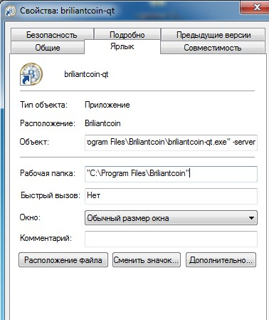
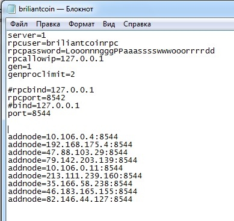

| Главная | Установить | Приобрести | Блок Эксплорер |
Установка кошелька
1. После установки и запуска кошелька, обязательно дождитесь его синхронизации, прежде чем начинать проводить какие-либо операции.
2. После синхронизации кошелька, проверьте создалась ли папка по адресу
C:\Users\(имя пользователя)\AppData\Roaming\Briliantcoin\ она понадобиться нам после создания конфиг файла.
3. Создаем ярлык и дописываем -server как на скриншоте

4. Создаем конфиг файл такого вида

с расширением .conf, файл должен иметь вот такой вид briliantcoin.conf и вставляем в корень по адресу
C:\Users\(имя пользователя)\AppData\Roaming\Briliantcoin\
5. Запускаем кошелек с ярлыка желательно с правами администратора ждем синхронизации и радуемся входящим транзакциям.